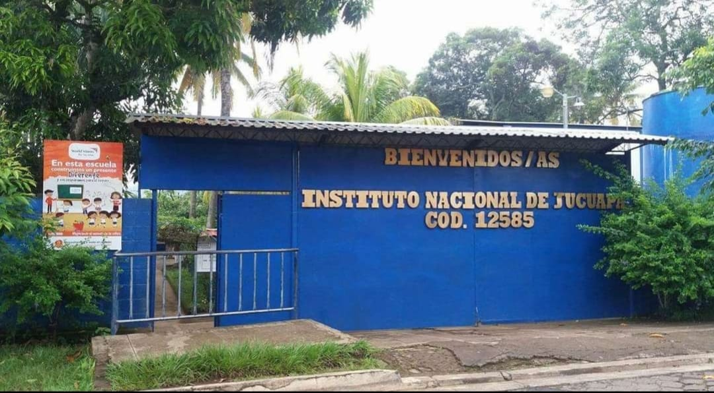

Nuestra Empresa
Supermercado A&A no nació solo como un negocio, sino como un sueño familiar en el corazón de Jucuapa, Usulután.
Todo comenzó con la visión de llevar productos frescos y de calidad a cada hogar de nuestra ciudad, entendiendo que el presupuesto familiar es sagrado.
Lo que inició como un pequeño puesto de productos básicos, se ha transformado gracias a la lealtad de nuestros clientes en un supermercado moderno y completo. Nuestro nombre, A&A, representa los dos pilares que nos sostienen: Ahorro y Atención.
Ahorro: Porque nos esforzamos por mantener precios justos para que a nadie le falte nada en su mesa.
Atención: Porque no solo vendemos productos, servimos a nuestros vecinos con el respeto y la amabilidad que caracteriza al pueblo jucuapense.
Hoy, seguimos creciendo de la mano con nuestra comunidad, orgullosos de nuestras raíces y comprometidos con el futuro de Jucuapa. En Supermercado A&A, más que clientes, somos una gran familia.
Orgullo de Jucuapa: Nuestro Instituto...

El Instituto Nacional de Jucuapa (INJ) El Instituto Nacional de Jucuapa es una destacada institución educativa de nivel medio ubicada en el municipio de Jucuapa, en el departamento de Usulután, El Salvador. Fundado en el año 1966, este centro de estudios ha sido, a lo largo de las décadas, un pilar fundamental en la formación académica de jóvenes en la región oriental del país. Desde sus inicios, el instituto ha mantenido un firme compromiso con la excelencia educativa. Gracias a su trayectoria y al esfuerzo conjunto de docentes, estudiantes y autoridades, el INJU se ha consolidado como una de las mejores instituciones educativas a nivel departamental, ganándose el respeto y reconocimiento tanto en la comunidad local como en todo el departamento de Usulután. El INJU es una institución pública, lo que significa que está financiada y administrada por el Estado salvadoreño, bajo los lineamientos establecidos por el Ministerio de Educación (MINED). Como tal, ofrece una educación accesible y de calidad a jóvenes de distintos sectores sociales, contribuyendo a la equidad educativa en el país. El prestigio del Instituto Nacional de Jucuapa se debe, en parte, a sus buenos resultados académicos, al compromiso de su personal docente y al desempeño sobresaliente de sus estudiantes en diversas competencias y actividades extracurriculares. A lo largo del tiempo, ha demostrado ser un semillero de talentos en áreas como las ciencias, las artes, el deporte y la tecnología. En resumen, el Instituto Nacional de Jucuapa no solo representa una oportunidad educativa para la juventud de Usulután, sino también un símbolo de compromiso, superación y orgullo para toda la comunidad....